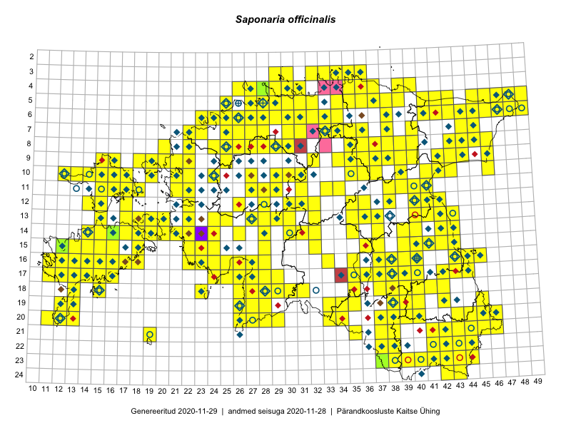

Saponaria officinalis
Uuendatud: 2016-12-02
Kaardile koondatud taksonid: Saponaria officinalis L.

Kaart põhineb 730 kirjel, neist vaatlusi 729 ja eksemplare 1. Taksonit on leitud 296 ruudust.
Kuvatud viited 20 esimesele andmebaasikirjele, ülejäänud PlutoFis
- Malle Leht: 2015-05-22: : ala
- Malle Leht: 2015-05-16: : ala
- Tiit Hallikma, Toomas Kukk, Indrek Tammekänd: 2015-06-09: 12-28: ala
- Meeli Mesipuu, Kadri Tali: 2015-04-30: 17-40: ala
- Meeli Mesipuu, Kadri Tali: 2015-04-30: 17-40: GPS punkt
- Meeli Mesipuu, Liina Oja: 2015-04-27: 08-43: ala
- Meeli Mesipuu, Liina Oja: 2015-04-27: 08-43: GPS punkt
- Meeli Mesipuu, Liina Oja: 2015-04-27: 08-43: ala
- Peedu Saar, Liina Oja: 2015-05-20: 18-27: ala
- Peedu Saar, Liina Oja: 2015-05-22: 18-27: GPS punkt
- Rein Kalamees: 2015-06-05: 05-32: ala
- Peedu Saar, Liina Oja: 2015-05-21: 16-23: GPS punkt
- Peedu Saar, Liina Oja: 2015-05-21: 16-25: ala
- Peedu Saar, Liina Oja: 2015-05-21: 16-25: GPS punkt
- Peedu Saar, Liina Oja: 2015-05-21: 16-25: GPS punkt
- Peedu Saar, Liina Oja: 2015-05-20: 18-28: ala
- Peedu Saar, Liina Oja: 2015-05-20: 18-28: GPS punkt
- Peedu Saar, Liina Oja: 2015-05-20: 18-28: GPS punkt
- Peedu Saar, Liina Oja: 2015-05-20: 18-26: GPS punkt
- Peedu Saar, Toomas Kukk: 2015-05-28: 11-17: ala